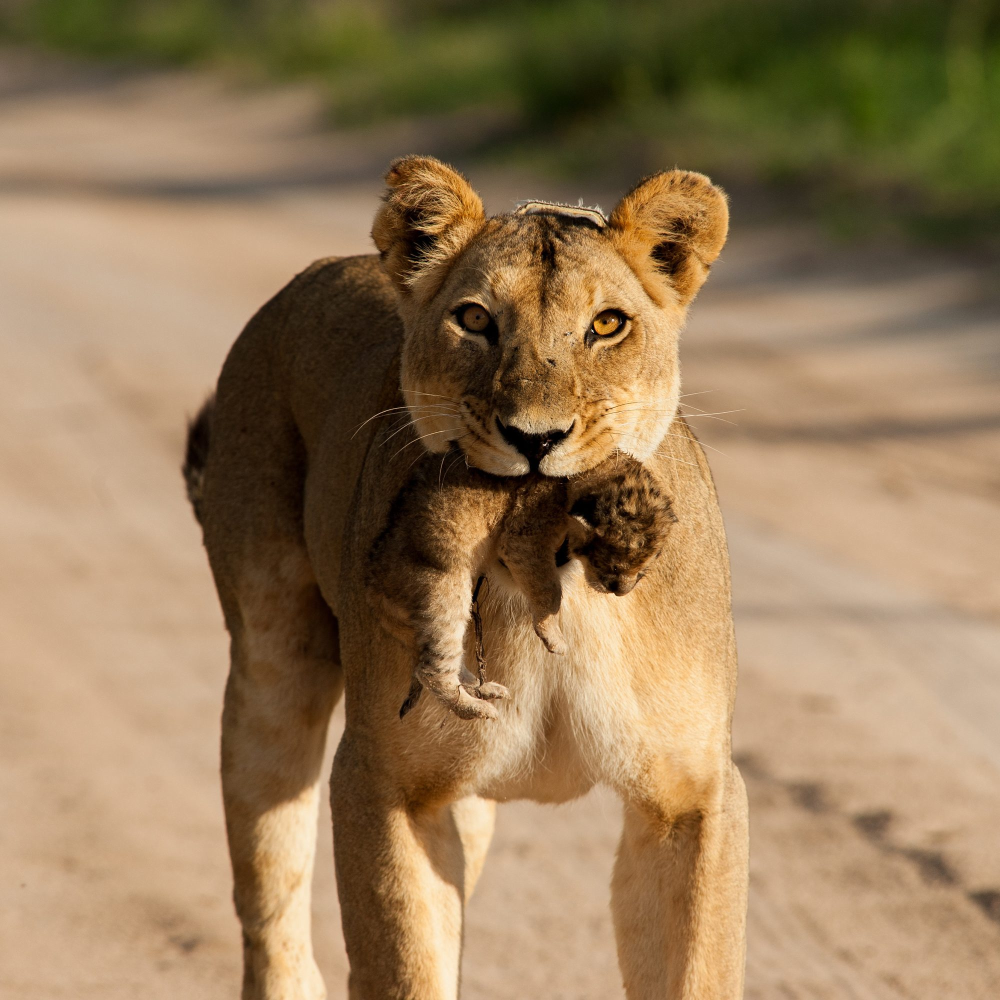
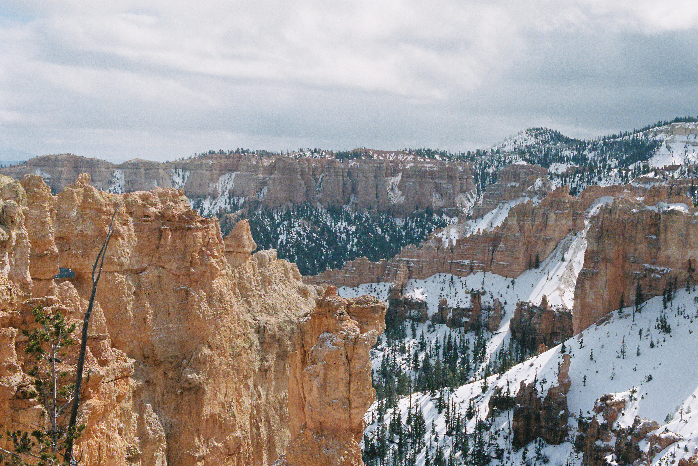
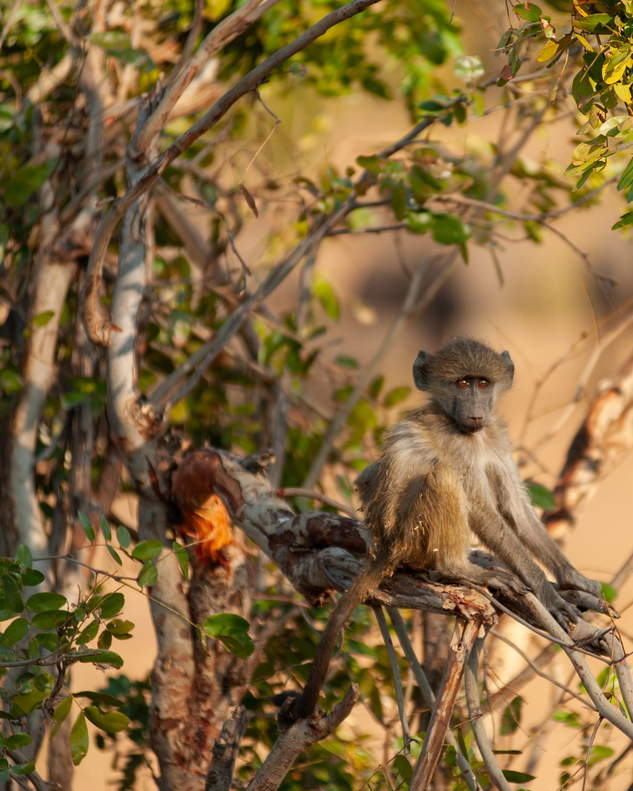
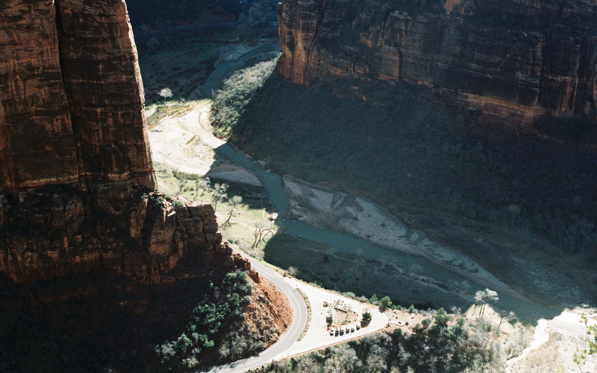
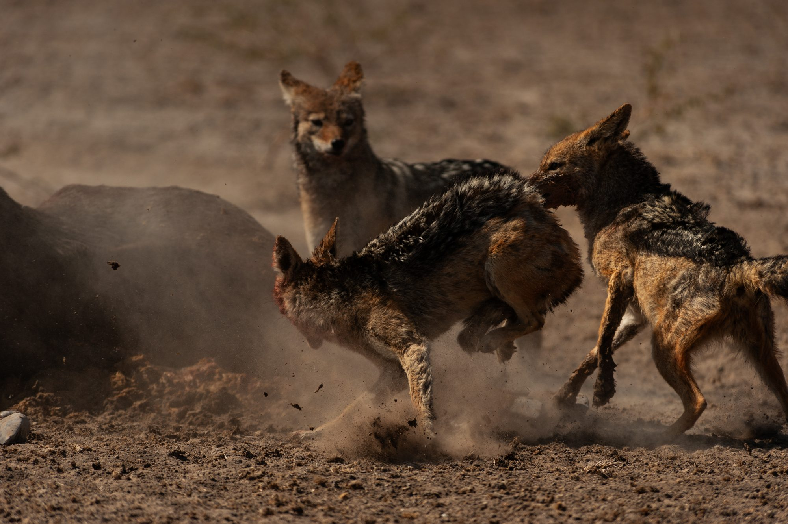
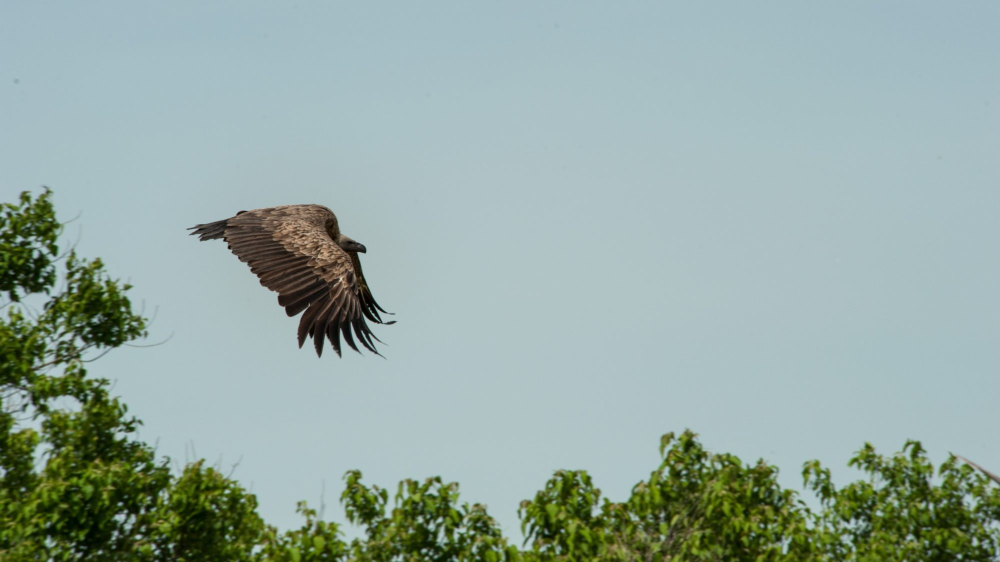
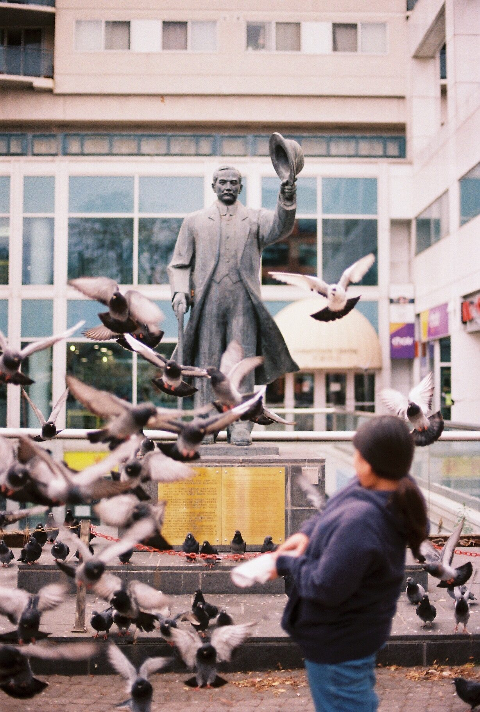

Anton Rehan Edirisinghe
I am a senior studying mechanical engineering at the University of Michigan (GO BLUE!). My interests span designing carbon capture systems for freight trains, wrestling with MATLAB, and developing tools that help other engineers work faster. Although I have decided to focus much of my energy on sustainability, my underlying ethos is the same: obsessing over the problems that matter.
When I'm not in the lab or studio, I'm armed with a camera, hoping to share the world from my eyes.
Work
Experience
Education
GPA 3.68/4.00. Coursework in Thermodynamics, Solid Mechanics, SolidWorks, NX, Statics & Dynamics, MATLAB, C++ and Python.
GPA 4.0. Analyzed ethical practices and corporate social responsibility; researched De Beers' operational impact in Botswana through stakeholder mapping.
Work & research
Correlated MEMS accelerometer and XSens motion-capture data via MATLAB regression across 3 subjects and 12+ activities. Built an AI agent that standardizes UD-10 crash reports into case summaries, cutting processing from 30+ min to ~10, and a sensor-equipment tracking system now informing a company-wide rollout.
Led an independent research project using videogrammetry and Pix4D photogrammetry to track motion of thrown objects from drone footage. Assisted in forensic mechanical analysis for automotive and marine accident investigations, and drafted a 30+ page expert report for legal proceedings.
Designed a proposed carbon-capture railcar architecture for a liquid-solvent system and built a first-pass life cycle inventory per tonne of CO₂ captured. Screened six point-source capture technologies for a comparative LCA; targeting publication Nov 2026.
Advised a Boston cleantech startup in a 4-student team; built v1 of a Python and MATLAB process model of its batch leaching reactor recovering rare earths from industrial waste.
Designing aerodynamic surfaces and Siemens NX molds for carbon fiber layups; building an engine dynamometer.
Researching solid-state recycling of aluminum using oxide fragmentation to strengthen aluminum sheets — eliminating the need for alloying and reducing material waste in manufacturing.
Responsible for precision machining of custom components using manual mill and lathe.
Skills
SolidWorks / NX, MATLAB, Thermodynamics, Python / C++, Photogrammetry / Pix4D, Arduino / Electronics, Life Cycle Analysis, Technical Writing
Photos
In Botswana, I would hijack my father’s Nikon camera and photograph wildlife. Today, I can be found vacationing with a second-hand Nikon F3 Film camera, focusing on capturing memories and the world through my pupils. Wildlife photography was exhilarating, with rapid firing to capture the subject at the perfect angle and pose. However, the yield was horrendous because you would take many photos knowing you would only love one! Switching to film made me hyper-focused on making the most of my limited rolls. It has taught me patience and to see with purpose.








Contact
The best way to reach me is LinkedIn.